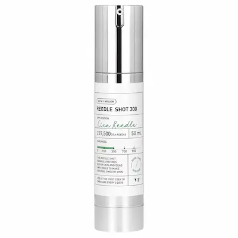
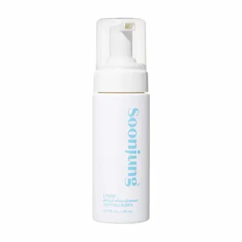
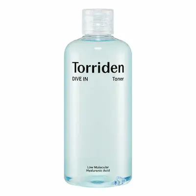
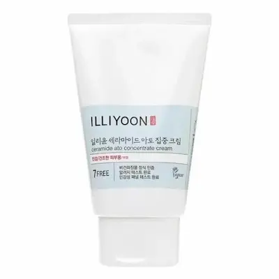
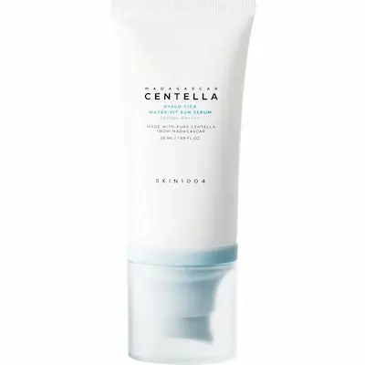

VT CICA X HYALON 100 REEDLE SHOT — средство с микроспикулами для улучшения текстуры кожи
Корейское средство для тех, кто интересуется спикульной косметикой и необычными форматами ухода за кожей. Разбираем технологию Cica Reedle®, особенности микроспикул и роль гиалуроновой кислоты в формуле. Рассказываем, как использовать средство на первом этапе ухода, какие ощущения могут возникать при нанесении и кому может подойти такой формат косметического ухода.
Почему этот продукт заслуживает внимания?
VT CICA X HYALON 100 REEDLE SHOT — необычное корейское средство для тех, кто хочет вывести привычный уход за кожей на новый уровень. Его главная особенность — технология Cica Reedle® с микроскопическими спикулами, которые делают нанесение совершенно непохожим на использование обычной сыворотки или крема. Если вам интересно попробовать косметику с инновационной спикульной технологией, это средство определённо заслуживает внимания.
Представьте уход, в котором сочетаются микроспикулы, Cica-компоненты и гиалуроновая кислота. Спикулы придают формуле её характерную особенность и могут вызывать ощущение покалывания при нанесении, а гиалуроновая кислота известна своей способностью притягивать и удерживать влагу. Такое сочетание особенно интересно тем, кто хочет работать не только над ощущением увлажнённости, но и над более гладким и ухоженным видом кожи. А формат Reedle Shot 100 позволяет познакомиться со спикульным уходом в версии с обозначением интенсивности 100.
Ещё один интересный момент — производитель рекомендует использовать VT CICA X HYALON 100 REEDLE SHOT на первом этапе ежедневного ухода. Это делает средство особенно любопытным для тех, кто любит экспериментировать с корейской косметикой и открывать новые форматы ухода. В этом обзоре разберём особенности Cica Reedle®, познакомимся с компонентами формулы, выясним, как правильно применять средство, чего ожидать от ощущений при нанесении и кому такой спикульный уход может подойти.
Текстура и первое использование
VT CICA X HYALON 100 REEDLE SHOT — необычное средство для ухода за кожей, которое привлекает внимание своей спикульной технологией Cica Reedle®. В отличие от привычных эссенций и сывороток, здесь главную роль играют микроскопические спикулы, благодаря которым нанесение сопровождается характерными ощущениями. Если ты давно присматривался к популярной корейской косметике с Reedle Technology, эта версия станет интересным поводом познакомиться с таким форматом ухода.
Особенность подобных средств заключается не только в составе, но и в самом процессе нанесения. Микроспикулы могут создавать ощущение лёгкого покалывания, пощипывания или покалывающей текстуры при контакте с кожей. Это одна из характерных особенностей спикульной косметики, к которой стоит быть готовым при первом использовании. Дополняет формулу гиалуроновая кислота, известная своими увлажняющими свойствами. Такое сочетание делает продукт особенно интересным для тех, кто любит современные корейские разработки и хочет попробовать что-то новое в уходе.
VT CICA X HYALON 100 REEDLE SHOT может заинтересовать любителей многоступенчатого корейского ухода, которые хотят познакомиться с косметикой на основе микроспикул. При этом важно учитывать индивидуальные особенности кожи: ощущения при нанесении могут отличаться у разных людей. Если кожа чувствительная или склонна к раздражению, особенно важно начинать осторожно, предварительно проверив переносимость средства. Не стоит использовать его на повреждённой, раздражённой или воспалённой коже.
Производитель рекомендует использовать средство на первом этапе ежедневного ухода. После очищения кожи нанеси VT CICA X HYALON 100 REEDLE SHOT, равномерно распределяя его по лицу и избегая области вокруг глаз и губ. Затем продолжи привычную рутину: используй тонер, сыворотку и увлажняющий крем. При первом знакомстве с продуктом лучше начать с небольшого количества и внимательно наблюдать за реакцией кожи. Учитывай рекомендации на упаковке и не увеличивай частоту применения без необходимости. Если возникает сильное жжение, выраженное раздражение или продолжительное покраснение, прекрати использование.
Важно помнить: характерное покалывание не означает, что средство обязательно работает эффективнее. Комфорт при использовании и реакция кожи индивидуальны. Поэтому знакомство со спикульной косметикой лучше начинать постепенно, не забывая о полноценном увлажнении и солнцезащите в дневной рутине.


С какими средствами сочетать VT COSMETICS CICA X HYALON 100 REEDLE SHOT®?
VT COSMETICS CICA X HYALON 100 REEDLE SHOT® можно включить в корейскую систему ухода, ориентированную на гладкость, увлажнение и ухоженный вид кожи. Чтобы дополнить его действие и не перегружать кожу лишними этапами, стоит подобрать несколько базовых средств: деликатное очищение, увлажняющий тонер, комфортный крем и солнцезащиту. Главное правило — сначала Reedle Shot после очищения, а затем остальные продукты.
1. Очищение — Etude SoonJung pH 6.5 Whip Cleanser
Для начала ухода можно выбрать Etude SoonJung pH 6.5 Whip Cleanser — мягкое очищающее средство с воздушной пеной. Оно поможет удалить загрязнения и подготовить кожу к последующим этапам. Особенно важно, чтобы очищение не оставляло неприятного ощущения сухости и стянутости: после умывания кожа должна чувствовать себя комфортно. Используй средство согласно инструкции, а после очищения переходи к Reedle Shot.
2. Основной этап — VT COSMETICS CICA X HYALON 100 REEDLE SHOT®
Это центральный продукт нашей подборки. Технология Cica Reedle® с микроспикулами и гиалуроновая кислота делают средство интересным вариантом для тех, кто хочет познакомиться с необычными форматами корейского ухода. Производитель рекомендует использовать его первым после очищения, до тонера и других средств. При нанесении возможно характерное покалывание. При первом знакомстве начни с небольшого количества, следи за реакцией кожи и соблюдай рекомендации на упаковке. Не наноси средство на повреждённую или раздражённую кожу и избегай области глаз и губ.
3. Увлажнение — Torriden DIVE-IN Low Molecule Hyaluronic Acid Toner
После Reedle Shot можно добавить увлажняющий этап с Torriden DIVE-IN Low Molecule Hyaluronic Acid Toner. Тонер с гиалуроновой кислотой поможет дополнить ежедневный уход и поддержать ощущение увлажнённости кожи. Наноси его аккуратно, без интенсивного растирания. Если после использования микроспикул кожа стала чувствительной или тонер вызывает дискомфорт, временно исключи его из этой комбинации.
4. Увлажняющий крем — Illiyoon Ceramide Ato Concentrate Cream
Для завершения ухода можно выбрать Illiyoon Ceramide Ato Concentrate Cream. Крем с церамидами подойдёт тем, кто хочет дополнить рутину питательным и комфортным уходом. Он поможет уменьшить ощущение сухости и поддержать защитный барьер кожи. Наноси его после тонера, если кожа хорошо переносит такую последовательность. Если предпочитаешь лёгкие текстуры, используй небольшое количество или выбери более лёгкий крем.
5. Солнцезащита — SKIN1004 Madagascar Centella Hyalu-Cica Water-Fit Sun Serum SPF50+ PA++++
Утром обязательно заверши уход солнцезащитным средством. SKIN1004 Madagascar Centella Hyalu-Cica Water-Fit Sun Serum SPF50+ PA++++ — лёгкий формат SPF, который удобно включить в ежедневную рутину. Он обеспечивает защиту от UVA- и UVB-излучения при правильном нанесении. Используй достаточное количество средства и обновляй защиту согласно инструкции, особенно при длительном пребывании на улице.
Как выстроить уход?
Утром: Etude SoonJung pH 6.5 Whip Cleanser → VT COSMETICS CICA X HYALON 100 REEDLE SHOT® (если применение утром соответствует инструкции и хорошо переносится кожей) → Torriden DIVE-IN Hyaluronic Acid Toner при необходимости → Illiyoon Ceramide Ato Concentrate Cream при необходимости → SKIN1004 Hyalu-Cica Water-Fit Sun Serum SPF50+ PA++++.
Вечером: Etude SoonJung pH 6.5 Whip Cleanser → VT COSMETICS CICA X HYALON 100 REEDLE SHOT® → Torriden DIVE-IN Hyaluronic Acid Toner, если кожа комфортно воспринимает его → Illiyoon Ceramide Ato Concentrate Cream.
Необязательно покупать и использовать все средства сразу. Для начала достаточно мягкого очищения, Reedle Shot и подходящего увлажняющего крема. Тонер можно добавить позднее, если коже комфортно. В дни использования микроспикул лучше не перегружать уход интенсивными кислотами, скрабами и другими потенциально раздражающими средствами. Вводи новые продукты постепенно и наблюдай за реакцией кожи. При сильном жжении, выраженном раздражении или стойком покраснении прекрати использование Reedle Shot. Утром не пропускай солнцезащиту.
Подборка средств от Beauty Panda
Редакционная подборка Estetica Lens.
Подобрали корейские средства, которые могут дополнить уход с VT
COSMETICS CICA X HYALON 100 REEDLE SHOT®: деликатное очищение,
увлажнение, поддержание защитного барьера кожи и солнцезащита.
Наличие и актуальные условия покупки можно уточнить
непосредственно у
BeautyPanda.

Etude SoonJung pH 6.5 Whip Cleanser
Деликатное очищение
Мягкое очищающее средство для подготовки кожи к нанесению Reedle Shot и последующим этапам ухода.
VT COSMETICS CICA X HYALON 100 REEDLE SHOT®
Главный продукт обзора
Средство с технологией Cica Reedle® и гиалуроновой кислотой для ухода за текстурой и ощущением гладкости кожи.

Torriden DIVE-IN Low Molecule Hyaluronic Acid Toner
Дополнительное увлажнение
Увлажняющий тонер с гиалуроновой кислотой для дополнительного этапа ухода после Reedle Shot, если кожа хорошо переносит такое сочетание.

Illiyoon Ceramide Ato Concentrate Cream
Комфорт и увлажнение
Крем с церамидами для дополнительного ухода, уменьшения ощущения сухости и поддержания защитного барьера кожи.

SKIN1004 Madagascar Centella Hyalu-Cica Water-Fit Sun Serum
Защита от солнца
Солнцезащитная сыворотка SPF50+ PA++++ для завершающего этапа утреннего ухода и защиты от UVA- и UVB-излучения.
Разбор состава VT COSMETICS CICA X HYALON 100 REEDLE SHOT®
Главная особенность VT COSMETICS CICA X HYALON 100 REEDLE SHOT® — технология Cica Reedle® с микроспикулами, дополненная гиалуроновой кислотой и другими ухаживающими компонентами. Это необычный формат корейского ухода, в котором производитель делает акцент на работе с неровной текстурой кожи и её гладким внешним видом. При этом формулу важно рассматривать комплексно: не только с точки зрения микроспикул, но и с учётом увлажняющей и смягчающей основы средства.
В основе концепции Reedle Shot лежит Cica Reedle® — фирменная технология VT, связанная с использованием микроскопических спикул. В составе также стоит обратить внимание на увлажняющие компоненты, в частности гиалуроновую кислоту, а также на другие ингредиенты, указанные в INCI конкретной версии продукта. Разберём, какую роль играют основные элементы формулы и почему это средство отличается от привычной увлажняющей сыворотки.
1. Cica Reedle® — фирменная технология с микроспикулами
Самая интересная особенность средства — технология Cica Reedle®. Она основана на использовании микроскопических спикул, которые являются характерной частью формулы Reedle Shot. В отличие от обычной увлажняющей сыворотки, это средство может давать специфическое ощущение покалывания при нанесении.
Почему это важно: микроспикулы делают формат средства необычным и выделяют его среди стандартных продуктов ежедневного ухода. Производитель позиционирует формулу как средство для работы с шероховатостью кожи и отшелушивания ороговевших клеток. При этом не стоит воспринимать спикулы как полноценные медицинские микроиглы или считать, что они гарантированно доставляют компоненты в глубокие слои кожи.
2. Reedle Shot 100 — уровень в линейке Reedle Shot
Цифра 100 в названии Reedle Shot 100 является обозначением конкретной версии продукта в линейке VT COSMETICS. Это не означает, что средство содержит 100% микроспикул или что концентрация технологии составляет 100%. Для понимания характеристик продукта важно ориентироваться на маркировку производителя и инструкцию именно этой версии.
Почему это важно: у линейки Reedle Shot есть разные варианты, поэтому при выборе стоит обращать внимание на обозначение конкретного продукта. Не нужно самостоятельно переводить цифру в названии в процент концентрации или гарантированную силу воздействия.
3. Hyaluronic Acid — гиалуроновая кислота
Гиалуроновая кислота — один из ключевых увлажняющих компонентов в концепции CICA X HYALON. В косметике её используют благодаря способности связывать воду и поддерживать увлажнённость поверхности кожи. В списке INCI конкретную форму ингредиента можно определить по соответствующему названию, например Sodium Hyaluronate, если оно указано на упаковке.
Почему это важно: увлажняющая часть формулы дополняет необычную технологию микроспикул. Она делает продукт интересным не только для тех, кто хочет познакомиться с Reedle Shot, но и для тех, кому важно поддерживать мягкость и увлажнённый вид кожи. Однако точную концентрацию гиалуроновой кислоты по одному названию продукта определить нельзя.
4. Cica — успокаивающая концепция ухода
Слово Cica в названии продукта отсылает к популярной в корейской косметике концепции ухода за кожей с акцентом на комфорт. Обычно термин Cica ассоциируется с центеллой азиатской и её производными. Однако само название Cica Reedle® не заменяет полноценный список INCI и не позволяет определить, какие именно компоненты центеллы присутствуют в конкретной формуле.
Почему это важно: при выборе средства стоит различать название технологии и подтверждённый состав. Если в INCI указаны Centella Asiatica Extract или её отдельные производные, их можно рассматривать как самостоятельные ингредиенты формулы. Без такого подтверждения не стоит приписывать средству конкретную концентрацию центеллы или гарантированный успокаивающий эффект.
5. Увлажнители — компоненты для поддержания мягкости кожи
В косметических формулах подобного типа важную роль играют увлажняющие вещества. К ним могут относиться Glycerin, Butylene Glycol, Propanediol и другие компоненты, если они присутствуют в INCI именно этой версии Reedle Shot. Такие ингредиенты помогают поддерживать увлажнённость кожи и формируют комфортную основу средства.
Почему это важно: микроспикулы — не единственная особенность продукта. Увлажняющая часть формулы также имеет значение, поскольку помогает дополнить уход и поддерживать более мягкое ощущение кожи. Точный перечень увлажнителей необходимо сверять с упаковкой конкретного продукта.
6. Смягчающие компоненты и основа формулы
Помимо активных и увлажняющих ингредиентов, в косметике используются смягчающие компоненты, которые влияют на распределение средства, его текстуру и ощущения после нанесения. В зависимости от формулы к ним могут относиться различные эмоленты, силиконы и липидные ингредиенты.
Почему это важно: именно основа во многом определяет, насколько комфортно средство распределяется по коже и как ощущается после нанесения. При оценке Reedle Shot важно учитывать не только технологию микроспикул, но и всю формулу. Если кожа склонна к жирности или не любит насыщенные текстуры, начинай с небольшого количества и оценивай индивидуальную переносимость.
7. Компоненты для ухода за текстурой кожи
На упаковке производитель указывает, что формула помогает работать с шероховатостью кожи и ороговевшими клетками, поддерживая более гладкий внешний вид. Это важная часть позиционирования Reedle Shot 100. При этом конкретный механизм действия готового средства нельзя оценивать только по рекламному описанию или одному ингредиенту.
Почему это важно: если тебя интересует уход за неровной текстурой, Reedle Shot может привлечь внимание именно своим необычным форматом. Но результат индивидуален и зависит от состояния кожи, особенностей применения и переносимости продукта.
8. Вспомогательные компоненты, стабилизаторы и консерванты
Как и любое готовое косметическое средство, Reedle Shot содержит не только ингредиенты, которые выносятся на первый план в описании продукта. В составе могут присутствовать компоненты для формирования текстуры, поддержания стабильности формулы и защиты продукта от микробного загрязнения. Их конкретный перечень следует проверять по INCI на упаковке.
Почему это важно: вспомогательные ингредиенты тоже являются частью готовой формулы. При чувствительной коже имеет смысл изучать полный список компонентов, а не ориентироваться только на название Cica Reedle® или гиалуроновую кислоту. Индивидуальная реакция возможна даже на средства с большим количеством ухаживающих ингредиентов.
Итог: чем интересен состав VT Reedle Shot 100?
VT COSMETICS CICA X HYALON 100 REEDLE SHOT® привлекает прежде всего сочетанием фирменной технологии Cica Reedle® с микроспикулами и увлажняющей концепции HYALON с гиалуроновой кислотой. Производитель позиционирует средство для ухода за шероховатостью и неровной текстурой кожи, а характерное покалывание делает его заметно отличающимся от обычной увлажняющей сыворотки.
Это средство стоит рассматривать как специальный этап ухода, а не как обычный тонер или базовую увлажняющую эссенцию. Производитель рекомендует наносить его первым после очищения, до тонера и других продуктов. После него можно продолжить уход подходящими увлажняющими средствами, если кожа хорошо переносит такое сочетание.
Важно учитывать, что точный состав и порядок ингредиентов необходимо сверять с INCI на упаковке конкретной версии. Название Cica Reedle® само по себе не подтверждает концентрацию центеллы, а цифра 100 в названии не означает 100% микроспикул. Не стоит также приравнивать микроспикулы к медицинским микроиглам или обещать определённую глубину их воздействия. При первом применении используй небольшое количество, следи за реакцией кожи и соблюдай инструкцию производителя.


Где найти?
VT CICA X HYALON 100 REEDLE SHOT представлена у BeautyPanda. Уточнить актуальное наличие и стоимость можно непосредственно у продавца.
Магазины Beauty Panda в Молдове:
📍 Сорока
str. Grigore Vieru 9B, Soroca, Moldova, MD-3001
📍 Дрокия
str. 31 August 20/C, Drochia, Moldova
*Наличие, стоимость и условия покупки рекомендуется уточнять у продавца перед визитом. Ссылка ведёт на страницу продавца в Instagram.
Часто задаваемые вопросы
Можно ли использовать VT COSMETICS CICA X HYALON 100 REEDLE SHOT каждый день?
Средство относится к категории ухода с микроспикулами, поэтому при первом знакомстве важно ориентироваться на инструкцию производителя и реакцию кожи. Начните с осторожного применения и не увеличивайте частоту, пока не убедитесь, что кожа хорошо переносит формулу. При выраженном жжении, раздражении или стойком покраснении прекратите использование.
Для какого типа кожи подходит это средство?
VT CICA X HYALON 100 REEDLE SHOT может заинтересовать тех, кто хочет сделать уход за текстурой кожи более продуманным и дополнить его увлажняющими компонентами, в частности гиалуроновой кислотой. Однако средство с микроспикулами подходит не всем: особенно внимательно к его применению стоит отнестись обладателям чувствительной, реактивной или склонной к раздражению кожи. Начните осторожно и оцените индивидуальную переносимость.
Помогает ли VT CICA X HYALON 100 REEDLE SHOT сделать кожу более гладкой?
Производитель указывает, что формула помогает работать с шероховатостью кожи и омертвевшими клетками, чтобы кожа выглядела более гладкой. Технология Cica Reedle® с микроспикулами делает это средство необычным этапом ухода, а гиалуроновая кислота дополняет формулу увлажняющим компонентом. Визуальный результат зависит от состояния кожи и индивидуальной реакции на средство.
Что такое Cica Reedle® и почему после нанесения может покалывать кожа?
Cica Reedle® — технология с микроспикулами, используемая в средствах VT COSMETICS. При нанесении может ощущаться покалывание или лёгкое пощипывание — это характерная особенность подобных формул. Интенсивность ощущений индивидуальна. Само по себе покалывание не является доказательством эффективности. Если появляется сильное жжение или выраженный дискомфорт, прекратите использование.
Что означает число 100 в названии Reedle Shot 100?
Reedle Shot 100 — название версии продукта. Число 100 не следует трактовать как 100% концентрацию микроспикул или как гарантию определённой интенсивности воздействия. Для понимания особенностей средства ориентируйтесь на описание производителя и собственную переносимость формулы.
Как правильно наносить Reedle Shot 100?
Производитель рекомендует использовать средство на первом этапе ежедневного ухода. После очищения нанесите подходящее количество на кожу лица, аккуратно распределите, избегая области вокруг глаз и губ. Затем продолжите уход тонером, сывороткой и увлажняющим кремом. Утром завершите рутину солнцезащитным средством широкого спектра действия с SPF 30 или выше. Обязательно учитывайте инструкцию на упаковке.
Можно ли сочетать средство с ретинолом и кислотами?
При использовании микроспикул лучше не перегружать уход дополнительными потенциально раздражающими активами. На начальном этапе не стоит наносить Reedle Shot 100 в одной рутине с ретинолом, кислотными эксфолиантами и другими интенсивными средствами. Сначала оцените переносимость продукта отдельно. Если вы уже используете активные компоненты, подбирайте сочетания осторожно и ориентируйтесь на состояние кожи.
Можно ли использовать Reedle Shot 100 вместе с сывороткой и кремом?
Да. Это средство предназначено для первого этапа ухода после очищения, поэтому сначала наносите Reedle Shot 100, а затем переходите к тонеру, сыворотке и крему. Для последующих этапов лучше выбирать комфортные увлажняющие средства без избыточно активных компонентов, особенно при первом знакомстве с микроспикулами. Новые продукты вводите постепенно.
Подойдёт ли Reedle Shot 100 жирной коже?
Это зависит от индивидуальной чувствительности и состояния кожи. Гиалуроновая кислота в формуле может дополнить уход увлажняющим компонентом, однако наличие микроспикул важно учитывать независимо от типа кожи. Если кожа склонна к жирности, но при этом чувствительная или легко раздражается, особенно важно начать осторожно. Не используйте средство на повреждённой или раздражённой коже.
Что делать, если после нанесения появляются жжение или покраснение?
Лёгкое покалывание может быть характерно для формул с микроспикулами, но сильное жжение, выраженный зуд, отёк или продолжительное покраснение — повод прекратить использование. При необходимости аккуратно смойте средство. Если симптомы сохраняются или усиливаются, обратитесь к врачу. Не наносите продукт повторно, пока кожа полностью не успокоится.
Когда можно ожидать первые результаты?
Ощущение увлажнённости и мягкости может появиться после применения благодаря увлажняющим компонентам, включая гиалуроновую кислоту. Производитель также заявляет о работе формулы с шероховатостью и омертвевшими клетками кожи. Однако скорость и выраженность видимых изменений индивидуальны и не гарантированы. Оценивайте состояние кожи в динамике, не забывайте об увлажнении и ежедневной защите от солнца.